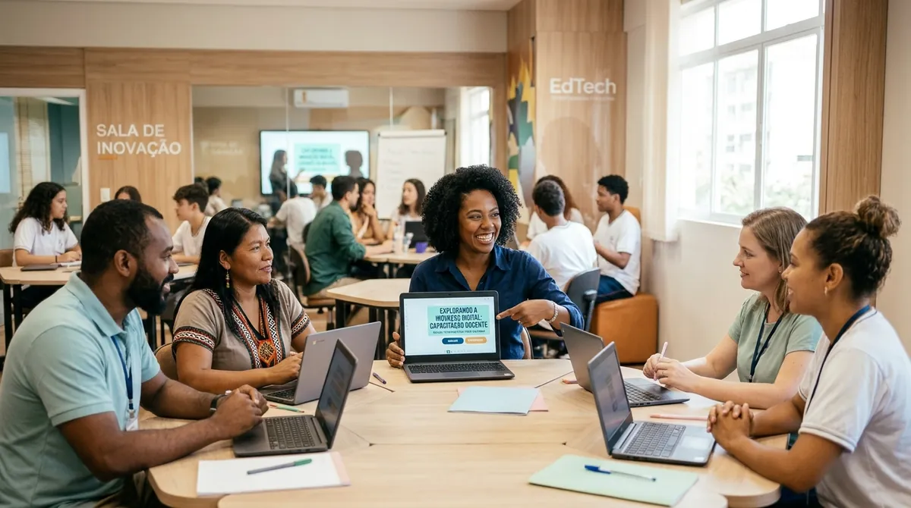

Muito Além da Teoria: Como a Jornada STHEAM Conecta a Escola à Realidade

Neste texto
Se você acompanhou nossa reflexão anterior sobre os novos desafios impostos pelo ECA Digital e pela BNCC da Computação, já percebeu que a abordagem STHEAM (Ciência, Tecnologia, Humanidades, Engenharia, Artes e Matemática) não é apenas mais um conceito modista na educação. Ela é uma resposta necessária e urgente para conectarmos o currículo escolar à vida e ao território dos estudantes de forma significativa.
Contudo, a grande dúvida que aflige muitos educadores da Educação Básica permanece: como sair da teoria e colocar projetos interdisciplinares e autorais em prática com a carga horária apertada e os recursos que já temos?
O Diálogo que Inspira: Inovação e Robótica Educacional no Chão da Escola
No bate-papo exclusivo sobre a Jornada STHEAM, o Prof. Fábio Fialho Meneghesso reuniu-se com a Profa. Kenya Nunes — referência e especialista em robótica educacional e metodologias ativas — para discutir o real papel da inovação pedagógica na rotina docente (MENEGHESSO, 2025). A conversa reforçou um ponto central: inovação pedagógica não começa com equipamentos caros ou laboratórios de última geração, mas sim quando o educador decide ressignificar sua prática diária.
A inclusão do "H" de Humanidades na sigla tradicional STEAM é justamente a chave que assegura a centralidade da ética, da diversidade e da empatia em projetos tecnológicos. Como destacado pela professora Kenya Nunes durante o bate-papo, a robótica e o pensamento computacional ganham valor educativo quando deixam de ser um mero exercício mecânico de montagem e passam a resolver problemas reais da comunidade escolar (MENEGHESSO, 2025).
Um exemplo prático dessa integração transdisciplinar trazido pelo Prof. Fábio Fialho é o Projeto LAB CARD, que associa o Pensamento Computacional e a abordagem STHEAM ao estudo do Sistema Circulatório na Biologia (MENEGHESSO, 2026). Através de simulações lógicas, representações físicas e investigação orientada, conceitos biológicos abstratos ganham vida de forma investigativa, demonstrando que a tecnologia serve para ampliar a autoria dos estudantes e a colaboração em equipe.
A Formação Continuada Feita de Professor para Professor
A Jornada STHEAM foi idealizada por Fábio Fialho Meneghesso — educador com ampla trajetória em sala de aula, mestre em Educação pela UFMG e reconhecido internacionalmente por suas contribuições no Space Foundation Teacher Liaison e Limitless Space Institute. Por ser um percurso desenvolvido "no chão da fábrica" educacional, o curso compreende perfeitamente as dores, limitações e exigências burocráticas enfrentadas pelos professores brasileiros.
Diferente de formações puramente teóricas ou manuais engessados, a proposta da Jornada STHEAM não entrega fórmulas prontas, mas estimula a co-criação. Através de módulos reflexivos e práticos, você é guiado a:
Desenvolver projetos autorais: Estruturar sequências didáticas e atividades investigativas conectadas à realidade sociocultural da sua escola.
Ressignificar espaços de aprendizagem: Transformar laboratórios convencionais, salas de aula comuns e pátios em clubes de ciência, inovação e criação analógico-digital.
Promover o protagonismo e a inclusão: Garantir que estudantes típicos e atípicos aprendam juntos, respeitando princípios do Desenho Universal para a Aprendizagem (DUA) e a ética digital.
Conforme aponta a literatura sobre formação docente, a atualização pedagógica eficaz não ocorre por imposição vertical, mas pelo fortalecimento da autonomia e da reflexão sobre a própria prática (NÓVOA, 2019).
O Próximo Passo para Transformar sua Prática
Nós, educadores, sabemos bem que nossa formação profissional nunca se encerra no diploma universitário. A sala de aula é um organismo vivo que exige constante renovação, e contar com uma metodologia estruturada faz toda a diferença para evitar a sobrecarga de trabalho e resgatar o entusiasmo de ensinar.
A Jornada STHEAM é o mapa definitivo para simplificar o alinhamento curricular, dominar metodologias ativas e criar experiências memoráveis com os seus alunos.
👉 Não perca nossa próxima publicação! No artigo final desta série, vamos apresentar detalhadamente a estrutura dos módulos da Jornada STHEAM, depoimentos de quem já aplicou a metodologia e uma oportunidade exclusiva para os leitores do portal Bio+Tech EduDesign garantirem sua vaga.
Referências
MENEGHESSO, Fábio Fialho. Bate Papo Jornada STHEAM. Participação de Kenya Nunes. Youtube: Canal Fabio Fialho Meneghesso, 30 nov. 2025. Disponível em: https://youtu.be/H8mCkYbigv8. Acesso em: 29 out. 2026.
MENEGHESSO, Fábio Fialho. Pensamento Computacional e STHEAM no Ensino do Sistema Circulatório: A experiência do projeto LAB CARD. In: ENCONTRO DE ENSINO DE CIÊNCIAS E INVESTIGAÇÃO (ENECI), 4., 2026. Anais... Ananindeua: Even3, 2026. Disponível em: https://www.even3.com.br/anais/4eneci-610886/1441227-pensamento-computacional-e-stheam-no-ensino-do-sistema-circulatorio--a-experiencia-do-projeto-lab-card/. Acesso em: 29 out. 2026.
NÓVOA, António. Os professores e a sua formação em tempos de metamorfose da escola. Educação & Realidade, Porto Alegre, v. 44, n. 3, e84910, 2019.
Disponível em: https://www.scielo.br/j/edreal/a/J6L9g4S5GkgR7hNqpxM8j7S/. Acesso em: 29 out. 2026.
Comentários
Verificando configuração dos comentários…